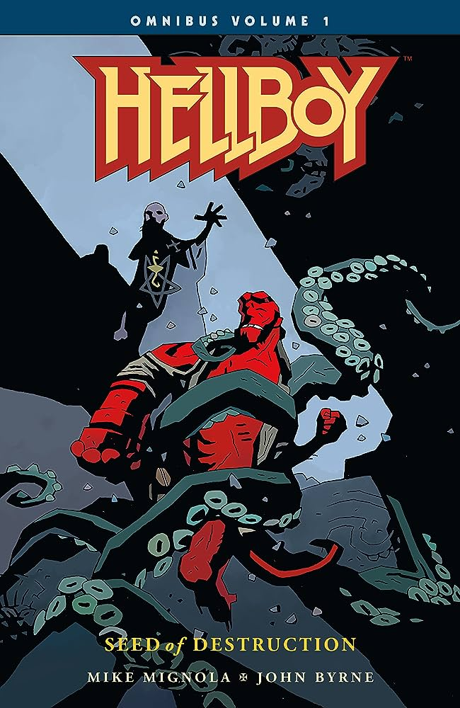
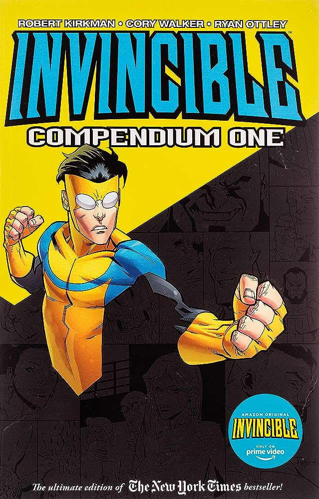
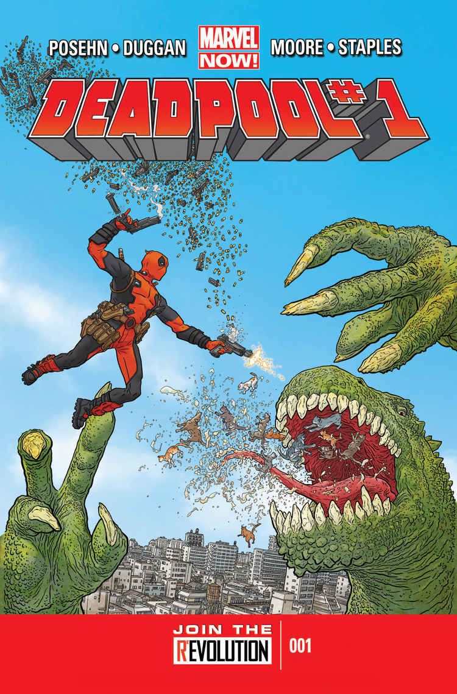
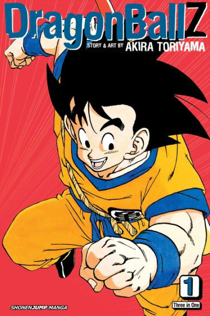

Back to Homepage
[]
Oddities In Media
[]
Good Albums
[]
Games on the Web
Cool Comics

Hellboy (Seed Of Destruction)
First Issue : August 1993
Creator : Mike Mignola
Hellboy, known well for its artstyle and
the 2004 movie
of the same name follows the protagonist, Hellboy
after being brought to our world by
Rasputin.
Hellboy is a paranormal investigator in the BRPD. The first omnibus contains the begining of Hellboy's battle
against Rasputin.
The first omnibus can be found here.
Hellboy omnibus volume 1 by Mike Mignola, published by Dark Horse Comics

Hellboy (The Wild Hunt)
First Issue : August 1993
Creator : Mike Mignola
Hellboy, known well for its artstyle and
the 2004 movie,
of the same name, follows the protagonist, Hellboy
after being brought to our world by
Rasputin.
Hellboy is on his own. The third omnibus continues the story from where it left of in omnibus 2.
The third omnibus can be found here.
Hellboy omnibus volume 3 by Mike Mignola, published by Dark Horse Comics

Invincible
First Issue : January 2003
Creator : Robert Kirkman
Invincible, known primarily
through its TV show is
a comic that follows Mark Grayson and his
escapades as a superhero.
The most well known character in Invincible is not Mark however, but his father Omni Man.
The first Compendium of Invincible contains the
major hook of the story which I would rather not
spoil for new readers.
The first compendium can be found here.
Invincible by Robert Kirkman, published by Image Comics

Deadpool (2012)
First Issue : November 2012
Writers : Gerry Duggan & Brian Posehn
Deadpool (2012) follows Deadpool, the
merc with a
mouth as he tries to discover the secrets of his past. Deadpool became known to the masses when the 2016 movie adaption was released.
This run of Deadpool begins with him killing zombified U.S. presidents.
This issue (and consecutive issues) can be found on Marvel Unlimited.
Deadpool (2012) by Gerry Duggan & Brian Posehn, published by Marvel Comics

Dragon Ball Z
First Chapter : 1988
Creator : Akira Toriyama
Dragon Ball Z
follows Goku who finds out he was
secretly part of an alien race called the Saiyans.
Soonafter Goku learns that two other Saiyans,
Vegeta and Nappa are coming to Earth to obtain the
7 wish granting dragon balls.
Dragon Ball & Dragon Ball Z are known for their
massive fights between increadibly strong villans
such as Frieza, the Androids, Cell and Majin Buu.
The first Vizbig edition (a collection of 3 volumes
from the series) can be found here.
Dragon Ball Z by Akira Toriyama, published by
Shonen Jump